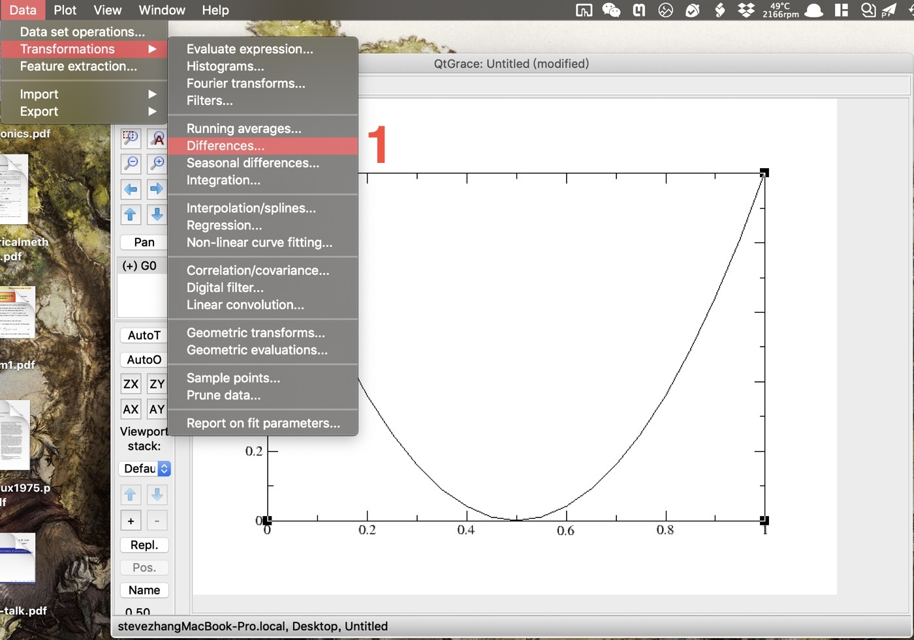
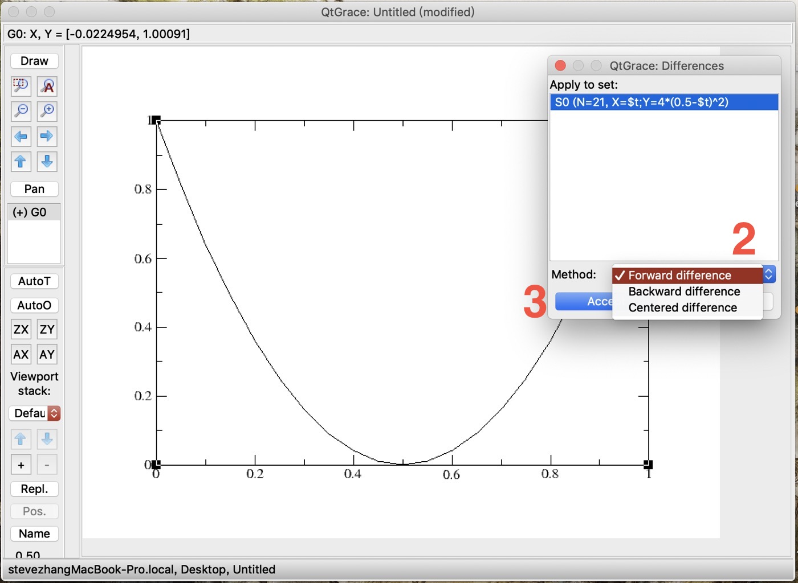
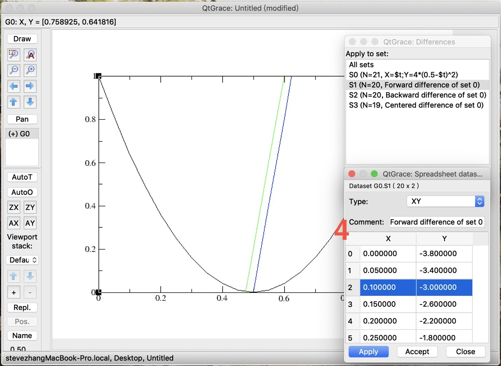
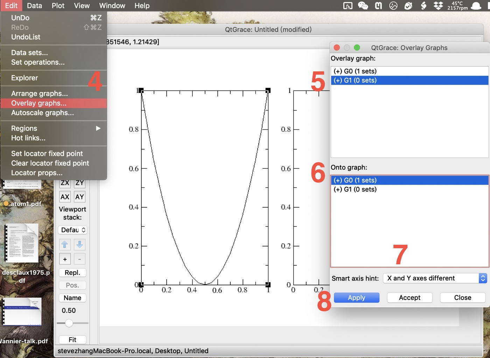
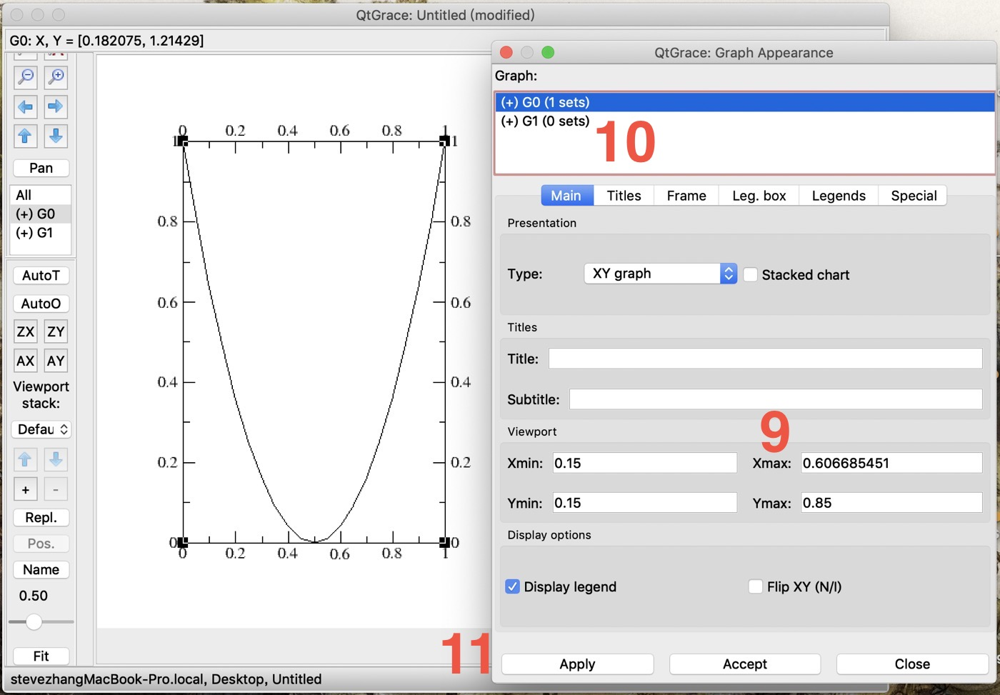
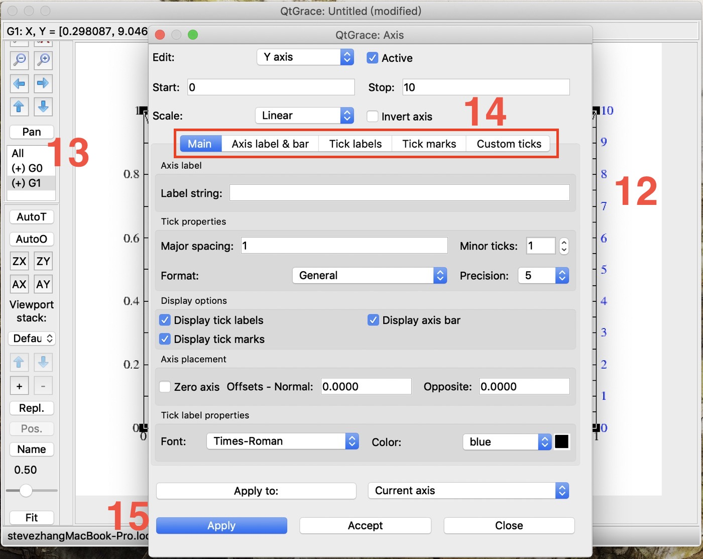

XmGrace小技巧汇总
收集笔者常用的(Xm)Grace使用的技巧.
以下的操作均可以在qtgrace下实现.
数据集变换
Grace中支持多种数据处理, 从简单的求前后两点的差, 到复杂的函数变换和非线性拟合.
差分
XmGrace包含差分功能, 支持三种不同差分方式: 向前差分(Forward), 向后差分(Backword)或者居中差分(centered).
$$
\begin{aligned}
\text{forward} &: y’_{i, f} = \frac{y_{i+1}-y_i}{x_{i+1}-x_i}\\
\text{backward} &: y’_{i, b} = \frac{y_i-y_{i-1}}{x_i-x_{i-1}}\\
\text{centered} &: y’_{i, c} = \frac{y_{i+1}-y_{i-1}}{x_{i+1}-x_{i-1}}\\
\end{aligned}
$$
以函数$y=4(x-0.5)^2$为例, 其导数$y’=8x-4$.
选中差分功能: Data->Tranformation->Differences
 选中XmGrace的差分功能 选中一组数据, 确认差分方案
 差分功能界面, 向前差分 Accept确认.
检查差分结果. 需要注意, 这里向前向后差分结果是相同的, 原因是向后差分的横坐标错了. 因此建议使用向前或居中差分.
 差分功能界面, 向前差分
表达式求值
用Evaluate expression功能, 可以对数据进行自定义的函数变换. 它可以对单组数据的xy进行操作, 也可以在多组数据间操作, 非常方便. 该功能和Differences一样在Transformations标签里, 具体位置见第一张图.
- 选中想要操作的数据.
- 填写函数变换的表达式.
- 勾选Sync. selection, 使变换后的数据直接替换原有数据set. 如果不勾选, Destination下的数据栏中也没有选中任何set, 则变换后的数据会存在新的set中.
- 确认.
这里主要说一下第二条. 在写表达式时, y表示纵坐标, x表示横坐标. 一些常用的变换
# 向上平移0.5 |
更多的函数可以参考官网Xmgr: transformations
双y轴(Double y-axis)
参考这一链接, 制作包含两个不同y轴的图, 以在同一张图中展示用有相同横坐标, 但纵坐标范围不同的两组数据.
- 在窗口个中放置两张并排的图. Edit->Arrange graphs…
- 将cols改为2.
确认.
 将右图盖到左图上. Edit->Overlay graphs…
- 选中G1为要覆盖的图.
- 选中G0为被覆盖上的图.
- 将Smart axis hint设置为”Same X axis scaling”.
确认. 这个时候两张图覆盖在了一起, 都窝在整个窗口的左侧.
 调节图的范围. Plot->Graph appearance. 在Viewpoint设置G0的xmax, 例如1.15.
- 对G1作同样的操作.
确认.
 为了分辨两个y轴, 用不同的颜色来区分. 双击右侧的y轴
- 确认在目前正在操作G1.
- 正常操作, 调节G1 y轴的属性.
- 确认.
有一点需要注意的是, 当调整y轴粗细比1大的时候, 可能会在某个y轴上看到黑线. 这是图的边框, 可以通过将Graph appearance中Frame标签下Frame box的透明度调到最低来消除.
文本输入
在XmGrace里输入坐标轴标记或者图例时, 有时会需要输入一些希腊字母或上下标之类的复杂组合, 或者使用斜体以表示物理量.
上下标
单独的上下标比较容易, 分别a\Sb\N是c\sd\N. 要输入具有上下标的符号, 用a\Sb\N\sc\N会使得下标或上标与符号隔得太远. 此时可以用\v{}或者\h{}分别调整垂直和水平的位置. 比如
a\Sb\N\s\v{0.2}\h{-0.5}c\N |
希腊字母与字体
希腊字符使用和字体调整本质上是相同的, 因为希腊字母实际上使用的是Symbol字体. 使用某种字体对应的语法
\f{font}text in font\f{} |
比如斜体的Times New Roman
\f{Times-Italic}italic here\f{} |
希腊字母
\f{Symbol}G\f{} = \xG\f{} |
可以看到\x其实等价于\f{Symbol}.